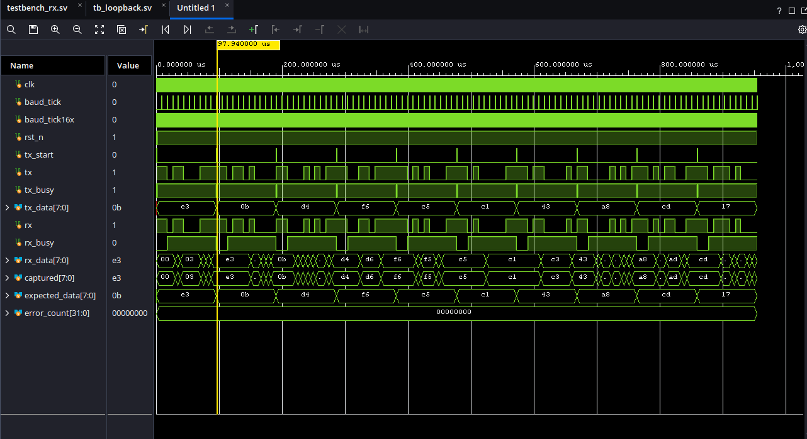
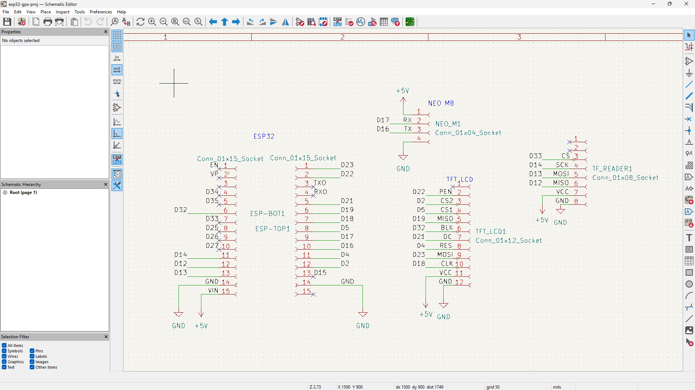

EdwardMayen
// Computer Engineering @ McMaster · Embedded Systems · RTL / Hardware Verification
I build systems where hardware and software meet — RTL designs verified in Vivado, embedded firmware running on custom PCBs, and control systems tuned in the field. B.Eng Computer Engineering candidate at McMaster University, based in Mississauga, Ontario.
Hardware instincts,
systems thinking.
I'm Edward Mayen, a Computer Engineering student at McMaster University (Class of 2029, 4.0 GPA), based in Mississauga, Ontario. My work sits at the boundary between circuits and code — RTL design, embedded firmware, PCB layout, and control systems.
On the hardware side I design PCBs in Altium and KiCad, write SystemVerilog RTL and testbenches verified in Vivado, and debug with an oscilloscope and multimeter when things don't behave the way the schematic says they should. On the software side I work across C/C++, Python, Java, and TypeScript — from bare-metal firmware to data pipelines.
I'm currently a member of McMaster Baja Racing's Data Acquisition team, and previously served as president and software lead of a competitive robotics team that qualified for Ontario Provincials twice.
// good embedded engineering means understanding both the datasheet and the deadline.
Where I've worked.
- Designed a hardware-in-the-loop (HIL) test setup using an Arduino to generate simulated primary/rear RPM sensor pulses, feeding realistic signals into the main board to validate firmware without requiring the full vehicle.
- Redesigned the vehicle's PCB layout in Altium Designer, achieving a 19% reduction in spatial footprint.
- Engineered deterministic C++ firmware for a Teensy-based PCB to capture high-frequency sensor data, improving system reliability and filtering data outliers.
- Architected a TypeScript and Java telemetry pipeline for real-time sensor data modelling and visualization.
- Diagnosed and repaired defective bedside patient entertainment systems by replacing and resoldering internal PCB components.
- Tested repaired units and verified functionality against structured validation procedures prior to redeployment.
- Flashed and modified onboard Linux-based firmware to keep devices on current, compatible software builds.
- Used custom electrical test jigs, oscilloscopes, and multimeters to isolate and verify functionality of individual internal components.
- Wrote a Python script to automate testing of channel banks on a coax-based distribution system, streamlining QA across many units.
- Designed and tuned an 8-motor C++ control system, implementing custom PID loops and input handling to hold 2cm positional accuracy and 1° heading precision.
- Developed autonomous routines using sensor-driven coordinate tracking, securing a Top 20 placement at provincial-level competitions.
- Mentored 15 junior developers, qualifying Jr. teams for two consecutive Ontario Provincial Championships.
Things I've built.



Recognition.
Let's work together.
Have an internship, co-op, or collaboration in mind? Reach out directly — details below.